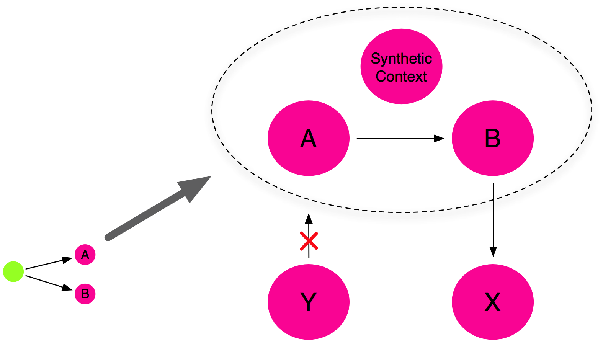

| Scoping | ||
|---|---|---|
|
|
|
|
| Regions | Pipeline | |
Virgo adds the concept of scoping to OSGi. The main use case for scoping is where a group of bundles form an application which needs to avoid clashing with other applications and which needs reliable behaviour when it calls third party bundles which use thread context class loading. Clashes can occur because of bundles, packages, or services conflicting in some way.
Virgo rewrites the metadata of bundles in a scope to prefix the bundle symbolic names with a scope-specific prefix and to add a mandatory matching attribute, with a scope-specific value, to packages exported by bundles in the scope.
Virgo also uses the standard OSGi service registry hooks to limit the visibility of services published by bundles in a scope.
However, a bundle in a scope may access bundles, packages, and services not provided in the scope but which are available outside the scope, that is from unscoped bundles. So a scope acts similarly to a programming language scope such as Java's curly braces:
int x;
// b is not visible here
{
int b;
// both b and x are visible here
}
To ensure reliable thread context class loading when third party bundles are called from a scope, Virgo generates a synthetic context bundle in the scope. The class loader of the synthetic context bundle is used as the thread context class loader when bundles in the scope make calls outside the scope. The synthetic bundle imports each of the other bundles in the scope using the Virgo import-bundle header. This is semantically equivalent to importing all the exported packages of the other bundles in the scope. So to make a package of a scoped application available for thread context class loading, it is simply necessary to export the package.
The figure below shows a scoped plan referring to two bundles A and B being deployed. The result is a scope containing the bundles A and B as well as the synthetic context bundle. Note that bundles inside the scope can access bundles, such as X, outside the scope. Also, bundles outside the scope, such as Y, cannot access bundles inside the scope.

|
|

|
|
| Regions | Pipeline |